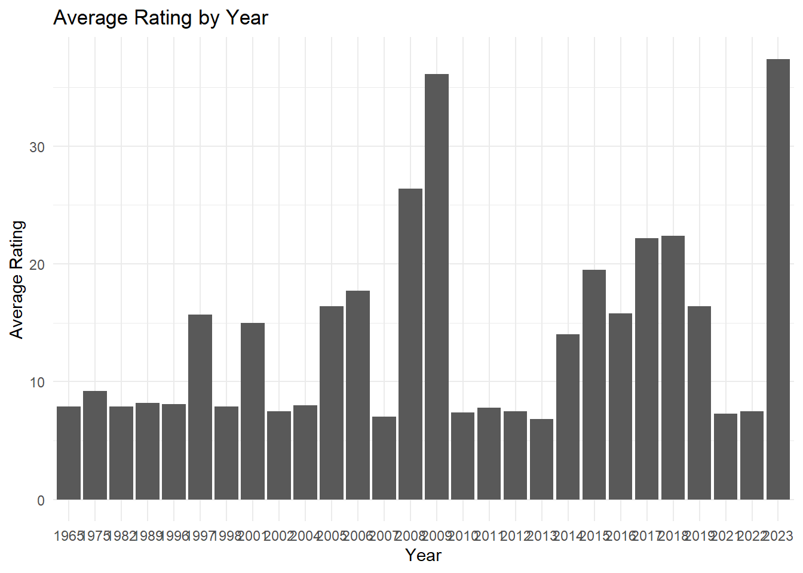
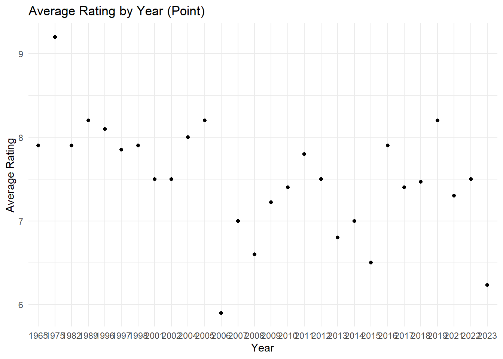
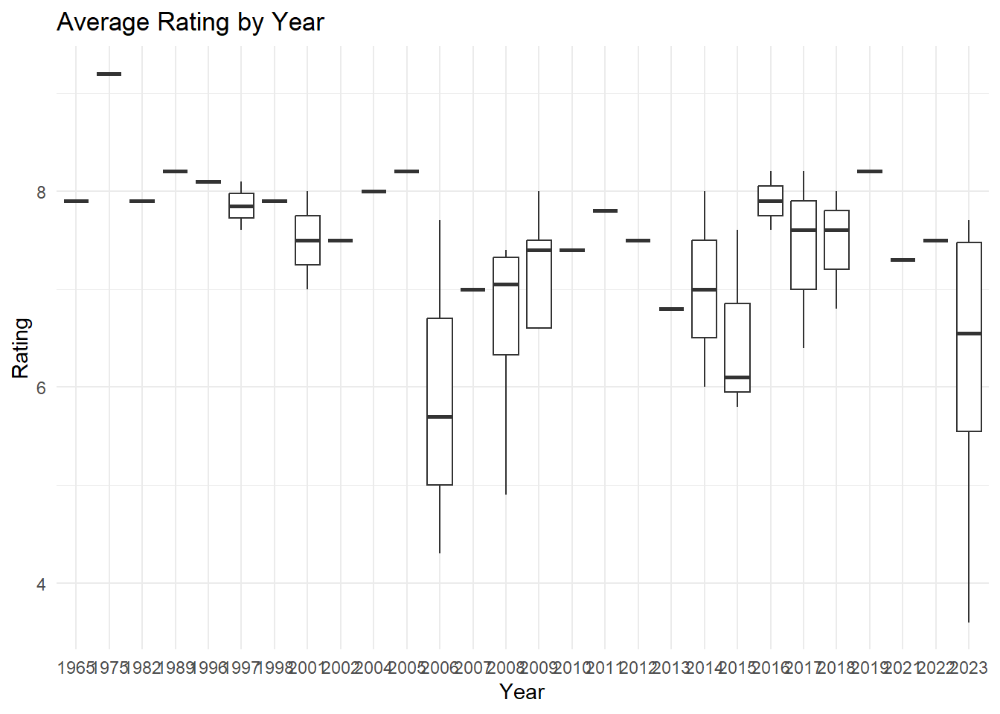
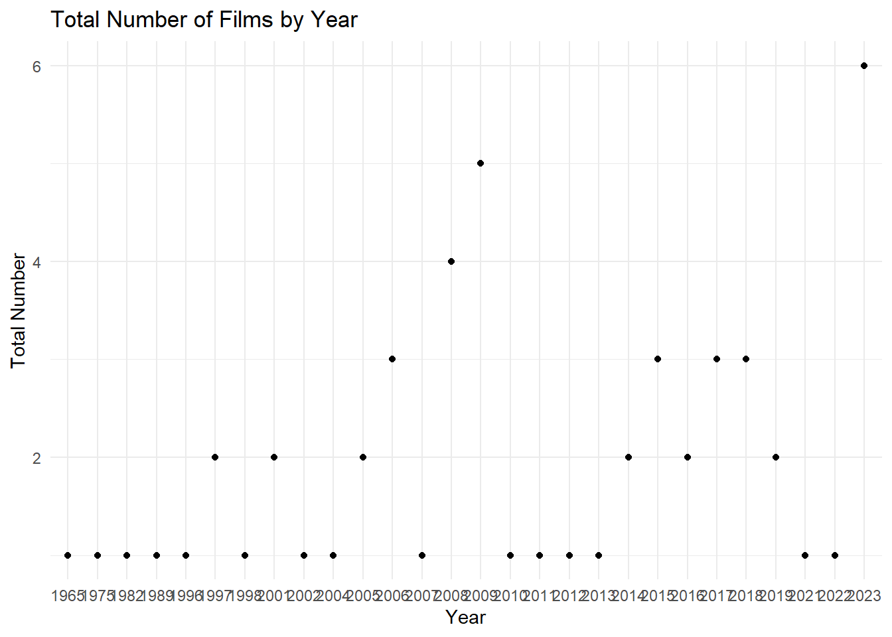
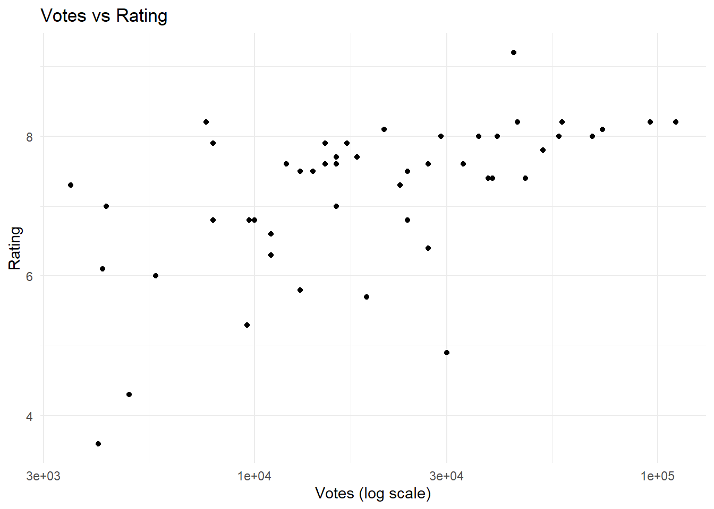
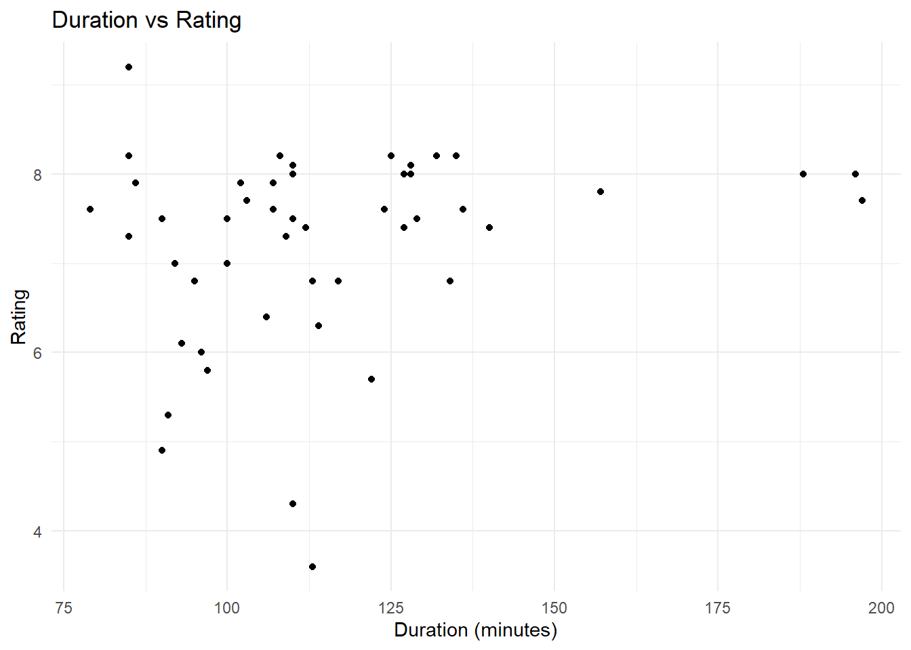

options(repos = c(CRAN = "https://cran.rstudio.com"))
install.packages("tidyverse") Installing package into 'C:/Users/PC/AppData/Local/R/win-library/4.4'
(as 'lib' is unspecified)package 'tidyverse' successfully unpacked and MD5 sums checked
The downloaded binary packages are in
C:\Users\PC\AppData\Local\Temp\RtmpE7SBCb\downloaded_packagesinstall.packages("rvest") Installing package into 'C:/Users/PC/AppData/Local/R/win-library/4.4'
(as 'lib' is unspecified)package 'rvest' successfully unpacked and MD5 sums checked
The downloaded binary packages are in
C:\Users\PC\AppData\Local\Temp\RtmpE7SBCb\downloaded_packagesinstall.packages("ggplot2")Installing package into 'C:/Users/PC/AppData/Local/R/win-library/4.4'
(as 'lib' is unspecified)package 'ggplot2' successfully unpacked and MD5 sums checked
The downloaded binary packages are in
C:\Users\PC\AppData\Local\Temp\RtmpE7SBCb\downloaded_packageslibrary(tidyverse)── Attaching core tidyverse packages ──────────────────────── tidyverse 2.0.0 ──
✔ dplyr 1.1.4 ✔ readr 2.1.5
✔ forcats 1.0.0 ✔ stringr 1.5.1
✔ ggplot2 3.5.1 ✔ tibble 3.2.1
✔ lubridate 1.9.4 ✔ tidyr 1.3.1
✔ purrr 1.0.2 ── Conflicts ────────────────────────────────────────── tidyverse_conflicts() ──
✖ dplyr::filter() masks stats::filter()
✖ dplyr::lag() masks stats::lag()
ℹ Use the conflicted package (<http://conflicted.r-lib.org/>) to force all conflicts to become errorslibrary(rvest)
Attaching package: 'rvest'
The following object is masked from 'package:readr':
guess_encodinglibrary(stringr)
library(ggplot2)
# Urls for the films, first url belongs to 2010-2023, second one belongs to below 2010.
urls <- c(
"https://m.imdb.com/search/title/?title_type=feature&release_date=2010-01-01,2023-12-31&num_votes=2500,&country_of_origin=TR&count=250",
"https://m.imdb.com/search/title/?title_type=feature&release_date=,2009-12-31&num_votes=2500,&country_of_origin=TR&count=250"
)
# Scrapping the movies
scrape_movie_data <- function(url) {
page <- read_html(url)
titles <- page %>% html_nodes(".ipc-title__text") %>% html_text()
years <- page %>% html_nodes(".dli-title-metadata-item:nth-child(1)") %>% html_text()
durations <- page %>% html_nodes(".dli-title-metadata-item:nth-child(2)") %>% html_text()
ratings <- page %>% html_nodes(".ratingGroup--imdb-rating") %>% html_text()
votes <- page %>% html_nodes(".ipc-rating-star--voteCount") %>% html_text()
#Check the lengths and correct any inconsistencies(I got AI help here, to aviod errors.)
print(paste("Number of Titles:", length(titles)))
print(paste("Number of Years:", length(years)))
print(paste("Number of Durations:", length(durations)))
print(paste("Number of Ratings:", length(ratings)))
print(paste("Number of Votes:", length(votes)))
#I got AI help here, to aviod errors.
max_length <- max(length(titles), length(years), length(durations), length(ratings), length(votes))
titles <- rep(titles, length.out = max_length)
years <- rep(years, length.out = max_length)
durations <- rep(durations, length.out = max_length)
ratings <- rep(ratings, length.out = max_length)
votes <- rep(votes, length.out = max_length)
# Convert the durations to minutes (convert hours and minutes to total minutes)
duration_minutes <- str_extract(durations, "\\d+(?=h)") %>%
as.integer() * 60 + str_extract(durations, "\\d+(?=m)") %>% as.integer()
#I got AI help here, to aviod errors.
votes_cleaned <- str_remove_all(votes, "[^0-9.KM]") %>%
str_replace_all("K", "e3") %>% # 1K -> 1000, 1.5K -> 1500
str_replace_all("M", "e6") %>% # 1M -> 1000000
as.numeric()
#I got AI help here, to aviod errors.
ratings_cleaned <- str_replace_all(ratings, "\\(.*\\)", "") %>%
str_trim() %>% as.double() %>% replace_na(NA)
#Data Frame Creating
movie_data <- tibble(
Title = titles,
Year = years,
Duration = duration_minutes,
Rating = ratings_cleaned,
Votes = votes_cleaned
)
return(movie_data)
}
# Fetching data from both URLs
movie_data1 <- scrape_movie_data(urls[1])[1] "Number of Titles: 27"
[1] "Number of Years: 25"
[1] "Number of Durations: 25"
[1] "Number of Ratings: 25"
[1] "Number of Votes: 25"movie_data2 <- scrape_movie_data(urls[2])[1] "Number of Titles: 27"
[1] "Number of Years: 25"
[1] "Number of Durations: 25"
[1] "Number of Ratings: 25"
[1] "Number of Votes: 25"#Combining the datas
combined_movie_data <- bind_rows(movie_data1, movie_data2)
print(head(combined_movie_data))# A tibble: 6 × 5
Title Year Duration Rating Votes
<chr> <chr> <dbl> <dbl> <dbl>
1 Advanced search 2023 197 7.7 16000
2 1. Kuru Otlar Üstüne 2019 132 8.2 58000
3 2. Yedinci Kogustaki Mucize 2015 97 5.8 13000
4 3. Baskin 2014 196 8 57000
5 4. Kis Uykusu 2018 95 6.8 10000
6 5. Cebimdeki Yabanci 2017 125 8.2 45000#Top 5 ranked movies
top_rated_movies <- combined_movie_data %>%
arrange(desc(Rating)) %>%
head(5)
print("Top 5 Ranked Movies:")[1] "Top 5 Ranked Movies:"print(top_rated_movies)# A tibble: 5 × 5
Title Year Duration Rating Votes
<chr> <chr> <dbl> <dbl> <dbl>
1 7. Kader 1975 85 9.2 44000
2 1. Kuru Otlar Üstüne 2019 132 8.2 58000
3 5. Cebimdeki Yabanci 2017 125 8.2 45000
4 9. Istanbul Için Son Çagri 2016 135 8.2 111000
5 Recently viewed 2019 132 8.2 58000#Bottom 5 ranked movies
lowest_rated_movies <- combined_movie_data %>%
arrange(Rating) %>%
head(5)
print("Bottom 5 Ranked Movies:")[1] "Bottom 5 Ranked Movies:"print(lowest_rated_movies)# A tibble: 5 × 5
Title Year Duration Rating Votes
<chr> <chr> <dbl> <dbl> <dbl>
1 13. Mucize 2023 113 3.6 4100
2 11. Uçurtmayi Vurmasinlar 2006 110 4.3 4900
3 20. Sevmek Zamani 2008 90 4.9 30000
4 8. Ahlat Agaci 2023 91 5.3 9600
5 14. Vavien 2006 122 5.7 19000fav_movies <- c("A.R.O.G", "G.O.R.A.")
fav_movie_data <- combined_movie_data %>%
filter(Title %in% fav_movies) %>%
select(-Duration) %>% # Remove 'Duration' column as per your previous code
arrange(desc(Rating))
print(fav_movie_data)# A tibble: 0 × 4
# ℹ 4 variables: Title <chr>, Year <chr>, Rating <dbl>, Votes <dbl>#The average rating and total number of films by year
updated_movie_data <- combined_movie_data %>%
group_by(Year) %>%
mutate(Mean_Rating = mean(Rating, na.rm = TRUE), Total_Film_Count = n())
# Yıllara göre ortalama puan grafiği (sütun)
plot_mean_rating_year_col <- updated_movie_data %>%
ggplot(aes(x = Year, y = Mean_Rating)) +
geom_col() +
theme_minimal() +
labs(title = "Average Rating by Year", x = "Year", y = "Average Rating")
print(plot_mean_rating_year_col)
plot_mean_rating_year_point <- updated_movie_data %>%
ggplot(aes(x = Year, y = Mean_Rating)) +
geom_point() +
theme_minimal() +
labs(title = "Average Rating by Year (Point)", x = "Year", y = "Average Rating")
print(plot_mean_rating_year_point)
# (boxplot)
plot_rating_distribution_year_box <- updated_movie_data %>%
ggplot(aes(x = Year, y = Rating)) +
geom_boxplot() +
theme_minimal() +
labs(title = "Average Rating by Year", x = "Year", y = "Rating")
print(plot_rating_distribution_year_box)
# Total Number of Films by Year Chart
plot_total_film_count_per_year <- updated_movie_data %>%
ggplot(aes(x = Year, y = Total_Film_Count)) +
geom_point() +
theme_minimal() +
labs(title = "Total Number of Films by Year", x = "Year", y = "Total Number")
print(plot_total_film_count_per_year)
# Correlasion Analysis for Question 3d (I got AI help here)
cor_votes_rating <- cor(combined_movie_data$Votes, combined_movie_data$Rating, use = "complete.obs")
print(paste("Votes and Rating Correlation:", cor_votes_rating))[1] "Votes and Rating Correlation: 0.497024905062488"# Scatter plot
plot_votes_rating <- combined_movie_data %>%
ggplot(aes(x = Votes, y = Rating)) +
geom_point() +
theme_minimal() +
scale_x_log10() +
labs(title = "Votes vs Rating", x = "Votes (log scale)", y = "Rating")
print(plot_votes_rating)
# Correlation Analysis for Question 3d(I got AI help here)
cor_duration_rating <- cor(combined_movie_data$Duration, combined_movie_data$Rating, use = "complete.obs")
print(paste("Duration and Rating Correlation:", cor_duration_rating))[1] "Duration and Rating Correlation: 0.232120372537127"# Scatter plot
plot_duration_rating <- combined_movie_data %>%
ggplot(aes(x = Duration, y = Rating)) +
geom_point() +
theme_minimal() +
labs(title = "Duration vs Rating", x = "Duration (minutes)", y = "Rating")
print(plot_duration_rating)Warning: Removed 3 rows containing missing values or values outside the scale range
(`geom_point()`).